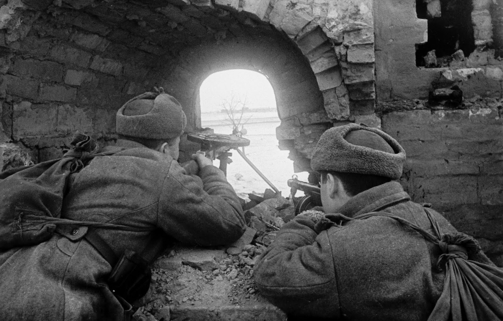
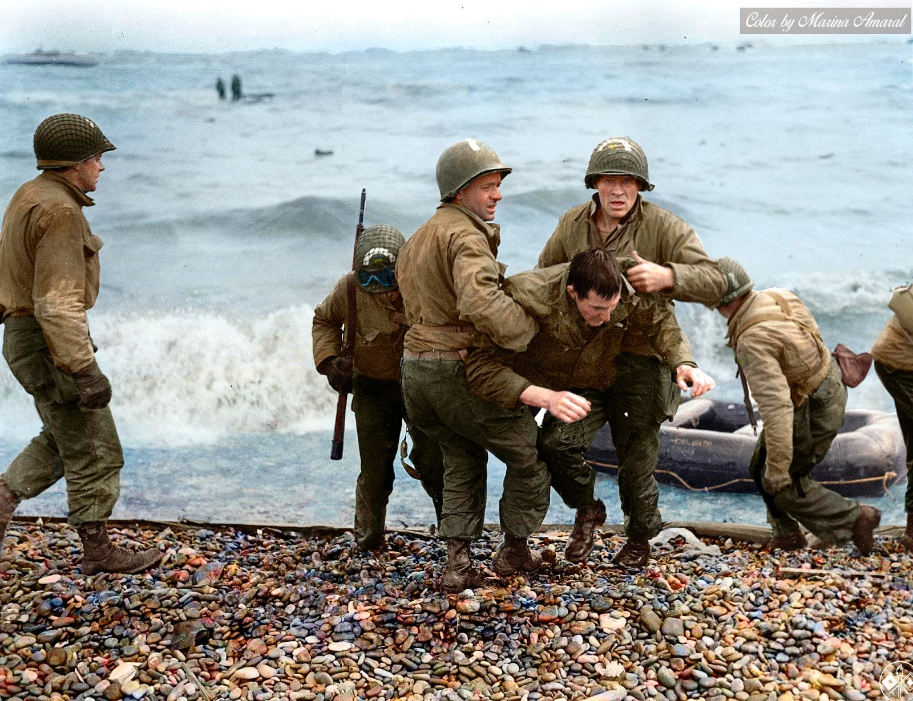

El principio del fin

La Segunda Guerra Mundial (1939-1945) fue el conflicto armado más devastador de la historia moderna, involucrando a más de 30 países y resultando en la muerte de millones de personas. Su inicio marcó "el principio del fin" para las ambiciones de expansión y dominación de las potencias del Eje, lideradas por la Alemania nazi de Adolf Hitler, Italia de Mussolini y el Japón imperial. El Estallido del Conflicto
El conflicto comenzó el 1 de septiembre de 1939, cuando Alemania invadió Polonia con una táctica militar novedosa conocida como Blitzkrieg (guerra relámpago), combinando ataques rápidos y masivos por tierra y aire. Esta agresión desencadenó la declaración de guerra de Reino Unido y Francia, quienes buscaban frenar la expansión alemana en Europa. Escalada de la Guerra
En poco tiempo, la guerra se extendió por todo el continente europeo, África y el Pacífico, arrastrando a naciones de todo el mundo. Batallas como la de Stalingrado y el Desembarco de Normandía cambiaron el rumbo del conflicto, mientras los Aliados (liderados por Estados Unidos, la Unión Soviética y Reino Unido) unían fuerzas para detener a las potencias del Eje. El Fin de la Guerra
El colapso del Eje comenzó con la derrota alemana en el frente oriental y la liberación de Francia en 1944. La guerra finalizó en 1945 con la rendición de Alemania y la devastación de Japón tras los bombardeos atómicos de Hiroshima y Nagasaki, poniendo fin a una era de destrucción y violencia sin precedentes. La Segunda Guerra Mundial redefinió las fronteras, economías y políticas globales, dejando un legado de sufrimiento, reconstrucción y la búsqueda de paz duradera en el mundo.
El colapso del Eje comenzó con la derrota alemana en el frente oriental y la liberación de Francia en 1944. La guerra finalizó en 1945 con la rendición de Alemania y la devastación de Japón tras los bombardeos atómicos de Hiroshima y Nagasaki, poniendo fin a una era de destrucción y violencia sin precedentes. La Segunda Guerra Mundial redefinió las fronteras, economías y políticas globales, dejando un legado de sufrimiento, reconstrucción y la búsqueda de paz duradera en el mundo.